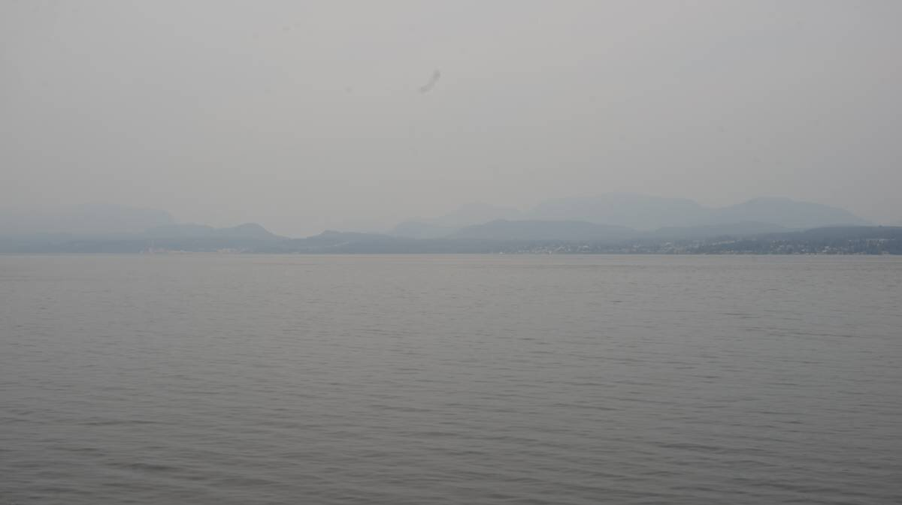

sturt bay
Sturt Bay, Texada Island
22.08.14
Click below dates for more recent updates:
What we refer to on this page as Sturt Bay is the traditional, stolen, unceded land of the Tla’amin First Nation, the K’ómoks Nation, and other Hul’qumi’num speaking peoples
After our stay in Tenedos Bay, Pino sailed south to Sturt Bay on Texada Island. We came here on the way up, and wanted to stop by again on the way down.
It is possible to anchor in Sturt Bay, but we chose the convenience of a dock, belong to the Texada Boating Club. The rates are reasonable (1$/foot), there is good, clean water for drinking and washing, and easy access to the grocery store and the various walks on the island. Many boats lay at anchor in the bay. It is open to the SE, but in August these winds are generally calm, and today was one of those days. The boats lay still, unbothered. During strong SE winds, the entire bay can get bumpy, even the marina docks start to move (they don't use pillars, the docks are anchored).
Pino found a spot on the docks. The visitor dock was full, but during the peak summer months they often relegate vacant member spots to visitors.
The marina sits behind a breakwater. The last time we were here we had not noticed, but the whole outside is lined with giant chunks of marble. Texada Island is full of quarries, it's been dug and logged to death with much of the product exported to the US. There are still limestone quarrying operations in Blubber Bay, as well as iron ore mines.
The grocery store in town, nearest to the docks, is small, and while there we found the produce lacking, but we did re-supply on various dry staples. The island has a farmer's market on Sundays, the day we arrived, but it ends early and we had arrived too late. On the walk there, we spied many blackberry bushes! We made plans already then to return with a bowl.
The island doesn't have any large predators, but it is full of a smaller variant of the black-tailed sitka deer. We saw a few while walking around town, feasting on some apples laying on the ground.
Early the next day, Devine went out and picked up a bowl-ful of blackberries which in turn became the base of a very good cake.
Everytime we go north, or south we stop in Sturt Bay on Texada Island.
We arrived here at 1800 on the 24th of August from Cortes Island, and stayed the night of the 25th due to very smokey air, and lack of wind.
The downside of the wind being absent is that we're not moving and neither is the smoke. BC is burning, and we're breathing the fumes.
This year the fires have been especially destructive.
We keep the companionway door shut, but even so, being outside is uncomfortable. Our throats feel scratchy. We hope the wind comes back soon so it can help move this smoke along.
Unfortunately, the wind has not returned and so the smoke is thick, and it is still here. There is supposed to be 5-15 kts out of the northwest today, but it'll likely stay light because the wind is switching to the southeast tomorrow.
We departed Sturt Bay at 0830, under motor at first, with out N95 masks on to help filter out the smoke. We've never had to sail with masks on before.
A weak wind arrived a bit later, we put Calcifer to sleep, poled out the jib, and raised the main. We weren't beating speed records here, but the wind was carrying us on at a slow 2.3-2.5 kts.
We had planned to stop either in Maude Bay(Thunder Bay), or Ballet Bay, in the end we chose the latter because we'd never been and were eager to check it out.
We could hear whales surfacing in the quiet, but we couldn't see them.
We arrived in Ballet Bay on Nelson Island at 1330.